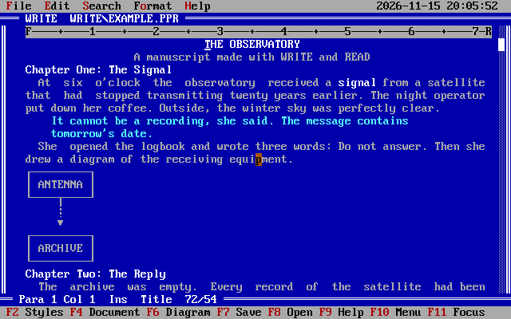
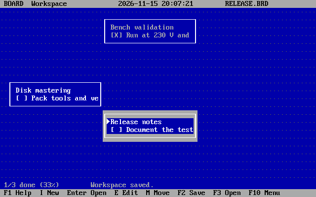
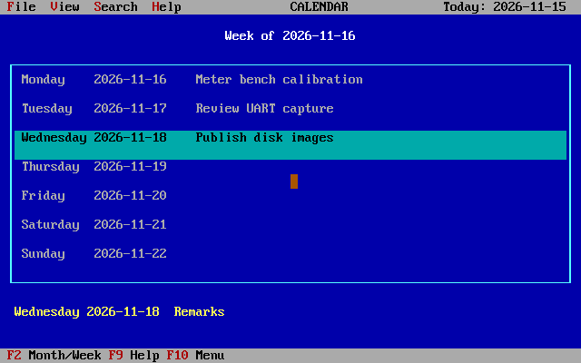
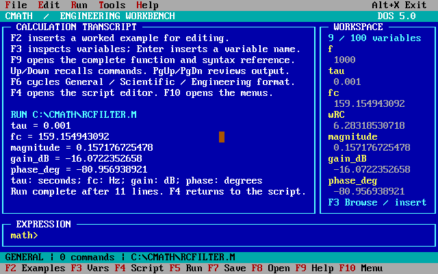
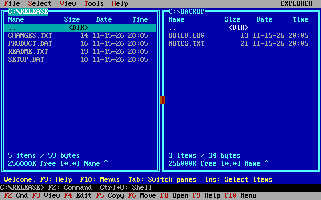
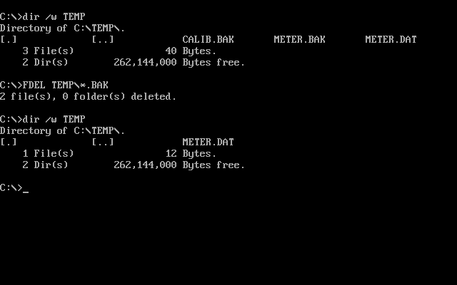

WRITE.EXE
Word processor. Draft a manuscript with paragraph styles and export it as RTF or laid-out text.


Download ZIP
write.zip · 55 KB
BUDOSTACK SOFTWARE
Software for MS-DOS 5.0
486DX2 / 66 MHz
VGA COLOR
Write a manuscript, run engineering calculations, or master a set of floppy disks. BUDOSTACK brings together standalone DOS programs you can download one at a time.
Browse applications
Jump to an application
Word processor. Draft a manuscript with paragraph styles and export it as RTF or laid-out text.

Book reader. Read PPR manuscripts, text and RTF in a centered book view with search and bookmarks.

Project planner. Arrange notes spatially, break them into child tasks, and track completion from the keyboard.

Day book. Keep dated notes in month and week views, search by text or tag, and exchange notes as text.

Program editor. Edit source in three slots with syntax highlighting and optional Open Watcom build and run commands.

Diagram editor. Draw text-mode flowcharts with labeled connectors and export diagrams as text.

Engineering spreadsheet. Build multi-sheet workbooks with formulas for calculations, measurements, and project costs.

Calculation workbench. Work with scalars and matrices, and save repeatable engineering calculations as scripts.

Relational database. Define tables, search records, and browse relationships in a local technical reference.

File manager. Browse, compare, and organize two directories side by side with keyboard or mouse.

Disk image workshop. Pack files into diskette images, inspect media, and mount images under DOSBox’s built-in DOS.

File move utility. Move or rename files and folders, with DOS wildcard support for batches of files.

File deletion utility. Permanently remove files or directory trees from the DOS command line without a confirmation prompt.

VGA startup sequence. Play the BUDOSTACK startup animation and PC speaker tune from DOS or AUTOEXEC.BAT.
Read the news in Markdown.
PATH. In DOSBox, mount the extracted folder as a drive. In DOSBox Pure, you can also open the ZIP directly.PROGRAM /? for command-line help.Target system: 486DX2/66 MHz with MS-DOS 5.0 and VGA. The downloads contain BUDOSTACK applications. Supply your own licensed copy of MS-DOS if you plan to install it.